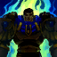

Perseverance(Passive)
If Garen has not recently been struck by damage or enemy abilities, he regenerates a percentage of his total health each second. Minion damage does not stop Perseverance.
Decisive Strike(Q)
Garen gains a burst of movement speed, breaking free of all slows affecting him. His next attack strikes a vital area of his foe, dealing bonus damage and silencing them.

Courage(W)
Garen passively increases his armor and magic resist by killing enemies. He may also activate this ability to give him a huge burst of Tenacity and damage reduction for a brief moment followed by a lesser amount of damage reduction for a longer duration.
Judgment(E)
Garen performs a dance of death with his sword, dealing damage around him for the duration and shredding the armor of enemy champions hit.

Demacian Justice(R)
The enemy champion with the most recent kills is the Villain. Garen's attacks deal additional true damage to that champion.